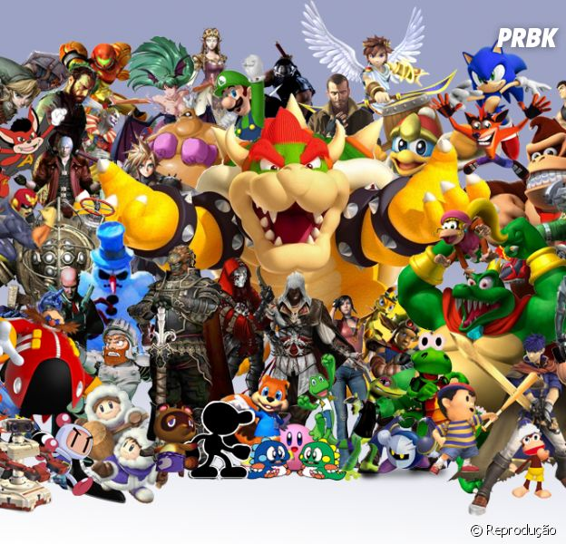

Blog Sobre Jogos
Curiosidades dos Jogos

Sabia que o jogo Pac-Man foi inspirado em uma pizza com uma fatia faltando? Criado em 1980...

O jogo The Legend of Zelda: Ocarina of Time é considerado por muitos como o melhor jogo de todos os tempos...
O clássico Super Mario Bros. foi o primeiro jogo a apresentar a Princesa Peach como uma donzela em perigo...
História dos Videogames
A história dos videogames começou na década de 1950, quando os primeiros experimentos científicos e projetos acadêmicos levaram à criação de jogos rudimentares. O primeiro jogo eletrônico reconhecido foi Tennis for Two, desenvolvido por William Higinbotham em 1958, que simulava uma partida de tênis em um osciloscópio. Nos anos 1970, a indústria começou a tomar forma com o lançamento de consoles domésticos e jogos de arcade. O Magnavox Odyssey, lançado em 1972, foi o primeiro console de videogame doméstico, embora não tenha sido um grande sucesso comercial. No entanto, Pong, lançado pela Atari em 1972, se tornou um sucesso massivo, popularizando os jogos de arcade. A década de 1980 trouxe um boom na indústria de jogos com o surgimento de consoles como o Atari 2600 e o Nintendo Entertainment System (NES). O NES, lançado em 1985, ressuscitou a indústria após a crise de 1983, oferecendo gráficos coloridos, som de qualidade e uma biblioteca de jogos icônicos, incluindo Super Mario Bros. e The Legend of Zelda. Durante os anos 90, a transição para a era 3D começou com consoles como o Sony PlayStation e o Nintendo 64. Jogos como Final Fantasy VII e Ocarina of Time redefiniram a narrativa e a jogabilidade, oferecendo experiências imersivas em mundos tridimensionais. Os anos 2000 e 2010 viram o crescimento dos jogos online e mobile, com o surgimento de plataformas como a Xbox Live e o PlayStation Network. O fenômeno dos jogos móveis começou com jogos como Angry Birds e Candy Crush, alcançando um público ainda mais amplo. Hoje, a indústria de videogames é uma das maiores do mundo, abrangendo consoles, PC, jogos móveis e eSports. A inovação continua com a realidade virtual, jogos em nuvem e experiências interativas, solidificando os videogames como uma forma de entretenimento global e uma parte importante da cultura moderna.
